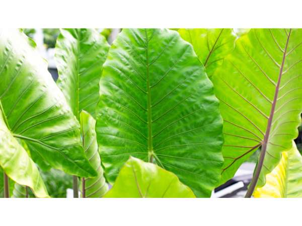
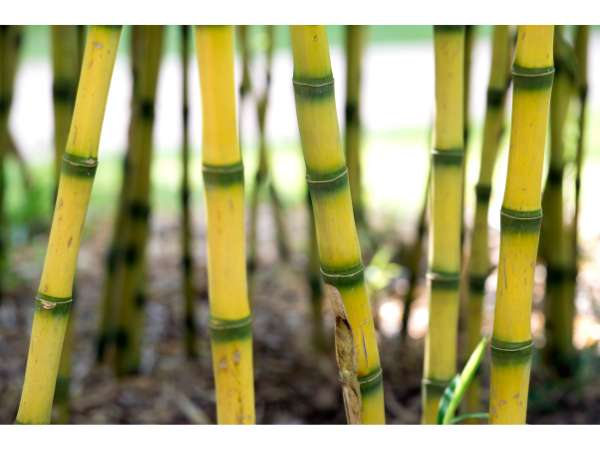
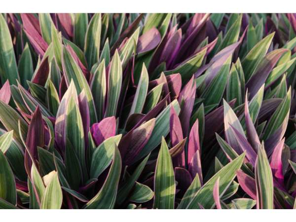
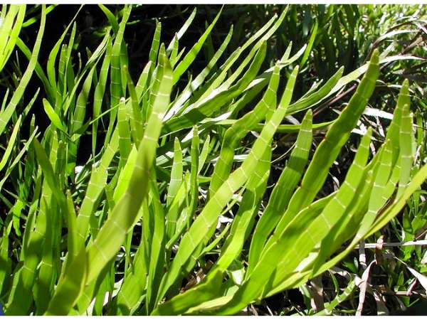
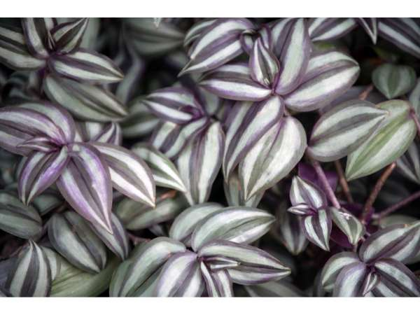

🌺 Ornamental Plants
Decorative plants for landscaping and beauty.

Areca Palm
Dypsis lutescens
Elegant clumping palm with golden-green fronds; popular ornamental for gardens and interiors.

Blushing Philodendron
Philodendron erubescens
Tropical climbing plant with large glossy leaves that emerge reddish-pink and mature to deep green.

Boston Fern
Nephrolepis exaltata
Popular hanging fern with graceful arching fronds, ideal for humid indoor spaces.

Curtain Creeper
Tarlmounia elliptica
Fast-growing vine with pendulous branches forming a dense green curtain; low maintenance.

Dove Tail Orchid
Xiphidium caeruleum
Striking tropical plant with blue-white flowers resembling a dove's tail, grown as a bold ornamental accent.

Dumb Cane
Dieffenbachia Camille
Tropical foliage plant with striking cream and green variegated leaves, popular as an indoor ornamental.

Geranium Aralia
Polyscias guilfoylei
Elegant tropical shrub with deeply lobed aromatic leaves resembling geranium, widely used as a hedge and ornamental foliage plant.

Giant Pothos
Epipremnum aureum
Vigorous tropical vine with heart-shaped variegated leaves, one of the easiest houseplants to grow.

Giant Taro
Alocasia macrorrhizos
Dramatic tropical plant with enormous upright arrow-shaped leaves, creating a bold jungle statement in gardens and interiors.

Golden Bamboo
Phyllostachys aurea
Elegant running bamboo with golden-yellow canes, widely planted as a privacy screen, windbreak, and ornamental grove.

Moses-in-the-Cradle
Tradescantia spathacea
Bold rosette-forming plant with sword-shaped leaves that are green on top and deep purple beneath, popular as a ground cover and border plant.

Norfolk Island Pine
Araucaria heterophylla
Symmetrical conifer with tiered horizontal branches; popular ornamental and indoor plant.

Pencil Cactus
Euphorbia tirucalli
Striking succulent shrub with pencil-thin green stems forming a dramatic architectural silhouette in tropical gardens.

Purple Heart
Tradescantia pallida
Low-growing succulent with striking deep purple leaves; excellent ground cover and container plant.

Ribbon Bush
Homalocladium platycladum
Unusual ornamental shrub with flat ribbon-like jointed stems instead of leaves, creating a striking architectural texture in tropical gardens.

Rubber Plant
Ficus elastica
Bold foliage plant with large glossy leaves; popular indoor plant and excellent air purifier.

Snake Plant
Sansevieria trifasciata
Hardy succulent with upright sword-shaped leaves; one of the best air-purifying indoor plants requiring minimal care.

Spider Aloe
Aloe × spinosissima
Compact hybrid aloe with densely spined rosettes and bright orange flower spikes, ideal for sunny rock gardens and containers.

Thuja
Thuja occidentalis
Evergreen conifer with scale-like aromatic foliage, widely planted as a privacy hedge and ornamental accent tree.

Wandering Jew
Tradescantia zebrina
Fast-spreading trailing plant with striking silver-striped purple leaves, popular as a ground cover and hanging basket plant.

Yesterday Today and Tomorrow
Brunfelsia pauciflora
Ornamental shrub with fragrant flowers that change color from purple to lavender to white over three days.

ZZ Plant
Zamioculcas zamiifolia
Glossy, drought-tolerant ornamental with dark green pinnate fronds; ideal for low-light interiors and neglect-proof.